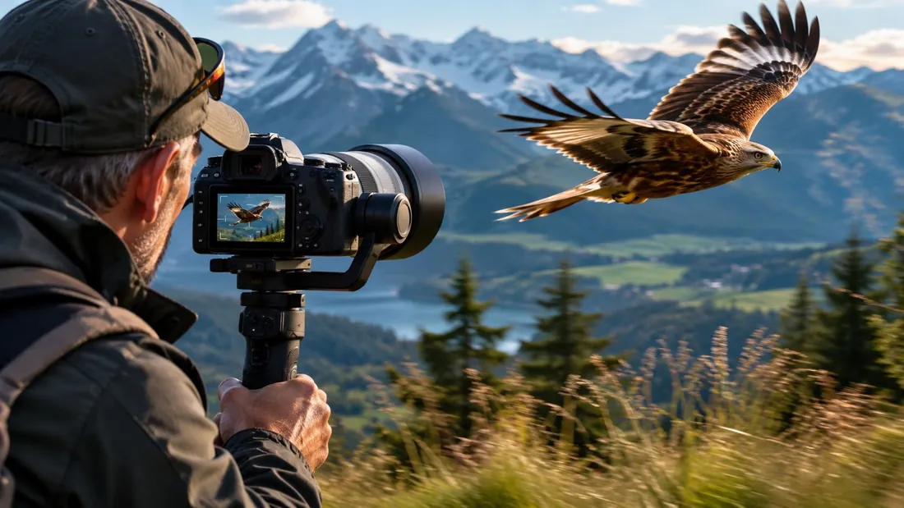

被写体を追う
被写体の種類、カスタムターゲット、速度、被写体が隠れたときの動作。
被写体を選ぶ
左のパネルで、Keepsightが探すものを選びます。
| 被写体 | バージョン | メモ |
|---|---|---|
| 人物 | 無料 | 全身。スポーツや動きのある場面に向いています。 |
| 顔 | 無料 | クローズアップ、Vlog、セルフィー向け。Keepsightは目を狙います。画面の中央に来るのは鼻ではなく目の高さです。 |
| 飛行機 | Pro | 空を背景に望遠レンズで使うと最もよく働きます。 |
| 鳥 | Pro | |
| 動物 | Pro | 犬、猫、馬など。 |
| 車 | Pro | 車、オートバイ、バス、トラック。 |
| 電車 | Pro | |
| 船 | Pro |
該当する被写体が複数写っている場合、Keepsightは中央に最も近いものを選びます。別の枠をタップすると切り替わります。
検出のオンとオフ
検出には計算能力が必要で、iPhoneが温まります。そのためKeepsightは必要な分だけ計算します：
- フルレート：トラッキング、自動ズーム、バーチャルジンバル、自動撮影、ジェスチャー、カスタムターゲットのいずれかが検出を必要としている間。
- プレビュー：それ以外は毎秒約5フレーム。枠が見え、ターゲットを選べます。
- オフ：トラッキングパネル上部の検出スイッチで完全にオフにできます。上記の機能のいずれかが必要とすると自動で始まります。
緑の枠は、被写体が表示範囲より大きい場合でも、常に見えている画像の内側に収まります。
カスタムターゲット
対象の周りに枠をドラッグすると、被写体の種類に関係なく、Keepsightはその対象そのものを追います。左のパネルにカスタムターゲットボタンが表示されます。タップすると選択が解除されます。
速度
| プロファイル | 動作 |
|---|---|
| スムーズ | ゆるやかに動き出し、最高速度は半分、小さな動きは無視します。落ち着いた映像向け。 |
| スタンダード | バランス型。ほとんどの被写体に適した出発点です。 |
| スポーツ | 最も速く反応します。急な方向転換向け。 |
| カスタム | 制御の値をすべて自分で設定します。設定の章をご覧ください。 |
被写体が消えたとき
- 予測中：被写体が短時間隠れた場合、ジンバルは同じ方向にパンし続けます。継続時間はすべての設定で設定でき、標準は1.5秒です。
- ターゲットを見失いました：その後、被写体が再び検出されるまでジンバルは停止します。
動きの速い動物と鳥

非常に速い動物や動きの読めない動物、とくに小さくて速い鳥は、常に確実に追えるとは限りません。
追尾の精度は、被写体が画面を横切る速さ、距離と大きさ、光、そしてiPhoneがどれだけ安定して認識できるかによって変わります。とくに重要なのはジンバルです。パンとチルトの最高速度、加速、遅延が影響します。
スポーツ の速度でも、ジンバルの機械的な限界を超えることはできません。ジンバルがない場合は、カメラがすでに写している画面の中でバーチャルジンバルだけが追います。
- 距離をとるか、ズームアウトしてください。被写体が画面を横切る動きがゆっくりになります。
- すばやい方向転換には スポーツ を選んでください。
- 十分な光と落ち着いた背景が認識の助けになります。